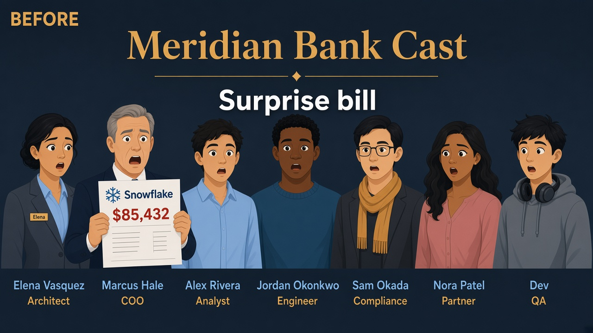
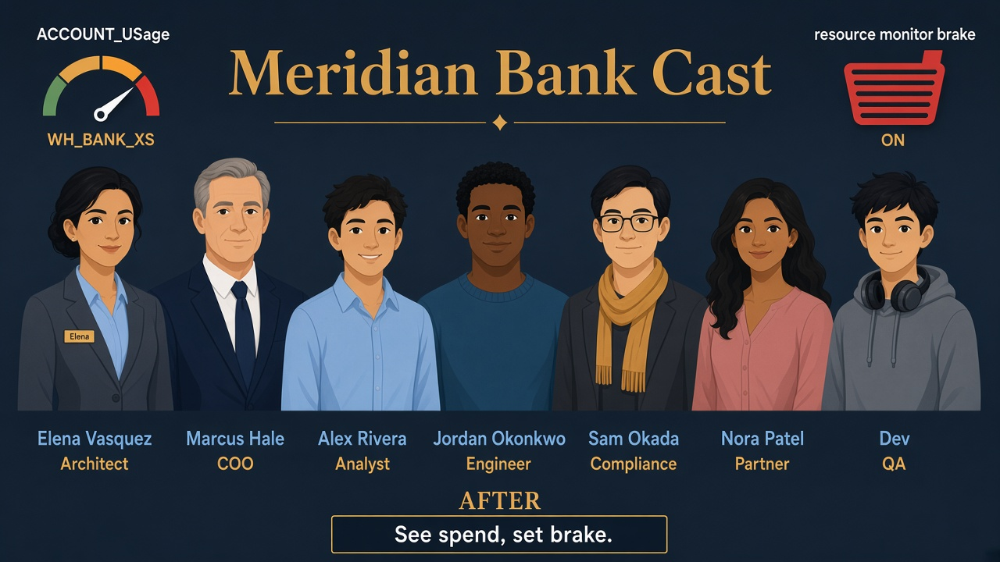

Lab 13 · Sunday night · You are Elena · Finance forwarded the bill
Surprise Snowflake credits
Read the Teach first sections before you query billing views.
Finance wants names on the invoice spike; Marcus wants brakes before the next weekend of ad hoc queries on WH_BANK_XS.
Business problem
Marcus got a Snowflake invoice spike. Ad hoc queries on WH_BANK_XS ran all weekend. Nobody could attribute spend to a team.
Solution you will run
Warehouse metering + query history from SNOWFLAKE.ACCOUNT_USAGE; attach resource monitor RM_BANK_LAB to WH_BANK_XS with notify and suspend triggers.

Before
Surprise bill — nobody attributed the spike.

After
Meters + monitor brake — see spend, cap runaway.
See it — don’t memorize definitions
After-the-fact attribution, then a guardrail before the next weekend.
Visibility
SNOWFLAKE.ACCOUNT_USAGE
Warehouse metering + query history — ~3h lag.
WH_BANK_XS credits ↑ QUERY_HISTORY → who ran what
Guardrail
RM_BANK_LAB
Credit budget on the warehouse — notify then suspend.
NOTIFY 75% · SUSPEND 100% stop ad hoc burn
Credit
Billing unit
Warehouse size × time while running. Lab 07’s WH_BANK_BOARD_S only burns when Alex’s board job wakes it.
WH_BANK_XS · daily WH_BANK_BOARD_S · heavy · auto-suspend
Picture · Brake the bill
ACCOUNT_USAGE + RM_BANK_LAB on WH_BANK_XS after Marcus’s surprise invoice.
Visibility vs guardrails — two moves
1 · After the factACCOUNT_USAGEattribute credits · teach lag
2 · Before next spikeResource monitorNOTIFY 75% · SUSPEND 100%
Sam wants auditability (who ran what). Marcus wants spend caps (stop the warehouse).
Elena uses ACCOUNTADMIN only for these account-level reads and monitor setup — then returns to ROLE_BANK_LAB_ADMIN for daily lab work.
Sunday night with Finance
Finance: “Which team?” Elena: “Metering by warehouse first, then QUERY_HISTORY for the worst queries — views lag about three hours.”
Marcus: “And something that stops the next all-weekend job.” Elena: “Resource monitor on WH_BANK_XS.”
1
Switch to ACCOUNTADMIN
What this does
Account usage views and creating resource monitors require elevated role — not Elena’s normal lab badge alone.
Why Elena does it
Interview answer: separate “run analytics as FR_/lab admin” from “read billing views as account admin.”
SQL · sql/13_finops.sql (part 1)
USE ROLE ACCOUNTADMIN;
2
Credits by warehouse (last 7 days)
What this does
Sums CREDITS_USED from metering history, grouped by WAREHOUSE_NAME, last seven days.
What you should see
WH_BANK_XS near the top if the spike was ad hoc on the lab warehouse. Empty or small totals on a quiet trial are OK.
SQL · metering (matches sql/13_finops.sql)
SELECT WAREHOUSE_NAME, SUM(CREDITS_USED) AS CREDITS
FROM SNOWFLAKE.ACCOUNT_USAGE.WAREHOUSE_METERING_HISTORY
WHERE START_TIME >= DATEADD('day', -7, CURRENT_TIMESTAMP())
GROUP BY 1 ORDER BY 2 DESC NULLS LAST;
Tell Finance about lag
Rows may stop ~3 hours before “now.” Do not promise live billing from this view alone.
3
Top queries by runtime (last 24 hours)
What this does
Lists the 20 longest queries — who (USER_NAME, ROLE_NAME), which warehouse, seconds elapsed, bytes scanned.
Why Elena does it
Metering says where credits went; query history says which SQL to fix (join Lab 07 Profile story).
SQL · query history
SELECT QUERY_ID, USER_NAME, ROLE_NAME, WAREHOUSE_NAME,
TOTAL_ELAPSED_TIME/1000 AS SECONDS, BYTES_SCANNED
FROM SNOWFLAKE.ACCOUNT_USAGE.QUERY_HISTORY
WHERE START_TIME >= DATEADD('day', -1, CURRENT_TIMESTAMP())
ORDER BY TOTAL_ELAPSED_TIME DESC NULLS LAST LIMIT 20;
✓ Pick one row and narrate: “I’d open this QUERY_ID in Query History → Profile”
4
Create resource monitor RM_BANK_LAB
Read the triggers like English
CREDIT_QUOTA = 10 is a small lab budget. At 75% Snowflake can NOTIFY (email/account alert). At 100%SUSPEND stops the warehouse from consuming more credits until someone resets the monitor.
Why Elena picks SUSPEND for Marcus
Notify alone still allows a runaway job to finish — suspend is the hard brake Finance asked for.
SQL · resource monitor
CREATE RESOURCE MONITOR IF NOT EXISTS RM_BANK_LAB
WITH CREDIT_QUOTA = 10
TRIGGERS ON 75 PERCENT DO NOTIFY ON 100 PERCENT DO SUSPEND;
5
Attach monitor to WH_BANK_XS
What this does
Links the monitor to Meridian’s lab warehouse — triggers apply to credit use on that warehouse.
SQL · alter warehouse
ALTER WAREHOUSE WH_BANK_XS SET RESOURCE_MONITOR = RM_BANK_LAB;
6
Smoke status
What you should see
One row confirming the lab FinOps script completed — same as the full sql/13_finops.sql file.
SQL · status
SELECT 'Lab 13 FinOps OK' AS status;
✓ Optional: SHOW RESOURCE MONITORS LIKE 'RM_BANK_LAB'; in Snowsight to see triggers
Interviewer presses further — say these out loud
Basics got you into the room. Cover each answer before you open it.
If you blank here, an Architect + dbt interviewer will know.
Q1. ACCOUNT_USAGE empty for “this morning’s spike” — what do you tell Finance?
Say: Views lag about one to three hours — empty isn’t “SQL wrong.” Re-pull WAREHOUSE_METERING_HISTORY later and use QUERY_HISTORY for expensive statements once visible. Don’t promise live pennies from ACCOUNT_USAGE alone.
Q2. Why ACCOUNTADMIN for metering/monitors then back to ROLE_BANK_LAB_ADMIN?
Say: Billing views and resource monitors are account-scoped; daily modeling isn’t. Separating “read the bill / set brakes” from “build Silver” is the privilege story — same pattern as Lab 00.
Q3. NOTIFY at 75% vs SUSPEND at 100% — when is notify-only wrong?
Say: Notify still lets a runaway finish and blow the weekend. Marcus asked for a hard brake — SUSPEND at quota. Notify-only when killing WH mid-board-refresh is worse than an email.
Q4. Resource monitor suspend — operational failure you plan for?
Say: Legitimate month-end jobs hit the cap and dashboards die. Size quota to workload, alert at 75%, documented reset owner, separate BOARD_S monitors so a lab spike doesn’t freeze the board path.
Q5. Metering by warehouse vs QUERY_HISTORY — attribute to teams?
Say: Warehouse first (WH_BANK_XS vs WH_BANK_BOARD_S as cost centers), then QUERY_HISTORY for who/role/SQL — Profile closes the loop (Lab 07). Tags/naming beat archaeology; monitors stop bleeding while engineering removes the scan.
Elena’s wrap-up (say this out loud)
“Meridian’s bill was a black box. I pulled WAREHOUSE_METERING_HISTORY and QUERY_HISTORY from ACCOUNT_USAGE for attribution and tuned WH_BANK_XS with RM_BANK_LAB suspend at 100%.
Outcome: Finance sees who spent credits; runaway ad hoc jobs get stopped before Marcus forwards another surprise invoice.”